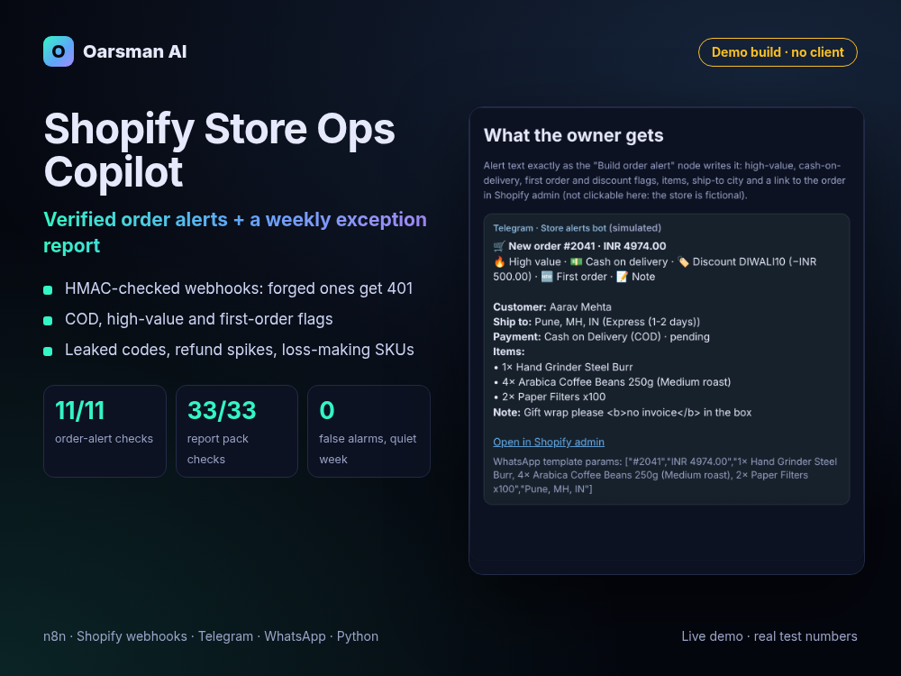

Demo build, no clientReal test numbers
Shopify Store Ops Copilot: the orders that matter, and the problems you'd miss
Instant, verified alerts for the orders worth a look, and a Monday report that finds leaked discount codes, refund spikes, stalled products and money-losing SKUs.

Problem
Small Shopify stores find out about trouble late. A big cash-on-delivery order from a first-time buyer looks like every other order in the admin. A staff discount code leaks to a coupon site and nobody notices for a week. One product quietly loses money once platform fees and shipping are counted. And many webhook automations trust any request that hits their URL, so a forged "order" can trigger real actions.
What we built
- Verified order alerts (n8n): every webhook is checked with HMAC-SHA256 against Shopify's signature before anything runs. Forged, altered or unsigned requests get HTTP 401.
- No double alerts: Shopify retries until it gets a 2xx; the workflow remembers recent event ids and skips repeats.
- Alerts worth reading on Telegram and WhatsApp: high-value, cash-on-delivery, first-order and discount flags, items, ship-to and a direct admin link that keeps Shopify's 18-digit order id exact. Customer text is HTML-escaped.
- Weekly exception report (Python skill pack) across Shopify, WooCommerce and Amazon exports: KPIs vs last week and the 4-week average, anomaly detection with what to check, and per-SKU profit after COGS, packaging, fees and fulfilment.
Result (tests, not client outcomes)
Sources: n8n templates test report (30 Oct 2026, 25/25 overall) and the e-commerce pack's test record (31 Oct 2026). Sample data is a fictional coffee store. Not covered: a real Shopify store, Telegram bot or WhatsApp Business account. There are no client results yet.
Stack
n8nShopify webhooksHMAC-SHA256Telegram Bot APIWhatsApp Cloud APIPython + pandasmatplotlib
Honest notes
- This is our own template and skill pack turned into a demo, not client work. Oarsman Coffee Co., its orders and its sales history are fictional.
- The live demo runs the template's real Code nodes and a real HMAC check in the browser with a placeholder key. The report section shows the pack's actual output on its sample data. No AI model is called on the page.
- AI tools helped write the code and this page. Every number above comes from our own test reports.